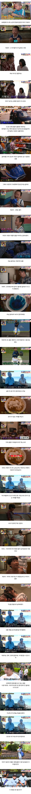
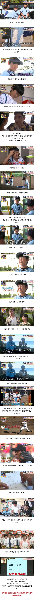
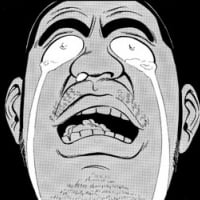

162 · 10 · 22 시간 전 · 원문


수집 당시 댓글 10개
포츈아그렇구나 · 19 시간 전
"진짜 재능"
경자 · 19 시간 전
진짜 가정환경이 중요하다 ㄹㅌ
노씨아저씨 · 15 시간 전
좋다 좋아 이런 이야기
Deitona · 15 시간 전
진짜 인간찬가 인간승리네
1486504 · 10 시간 전
이후 프로데뷔하고 신인왕, 3년연속 올스타, 팀의 퍼시픽리그 3연패, 일본시리즈 1회 우승까지 이끄는 활약을 펼침.
최근 3년 연속 whip 0점대 기록은 진짜 개대단..
↳ 답글 · 지옥의코만두 · 10 시간 전
ㅈㄴ잘하네
↳ 답글 · 벼이려벼아려벼 · 1 시간 전
아 최근 성적도 좋아서 감동이다 ㅠㅠ ㅎㅎ
jaxx · 10 시간 전

기분좋은향기나는모코코 · 10 시간 전
광개토대마왕 · 8 시간 전

"진짜 재능"